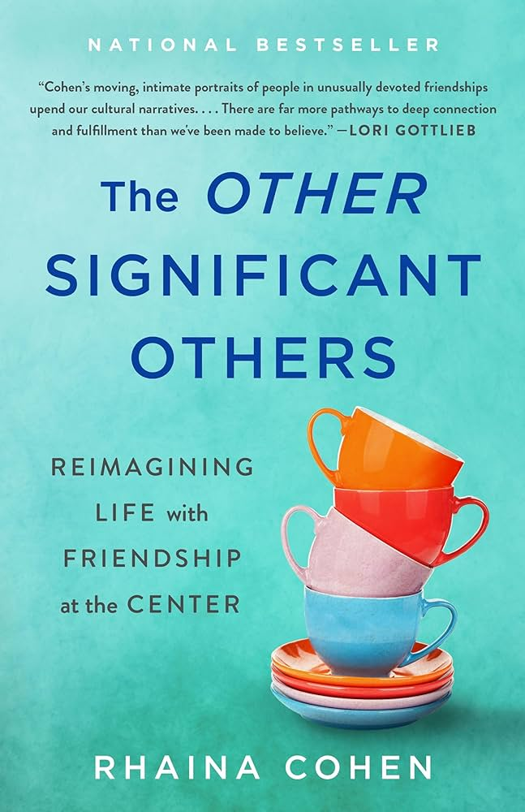
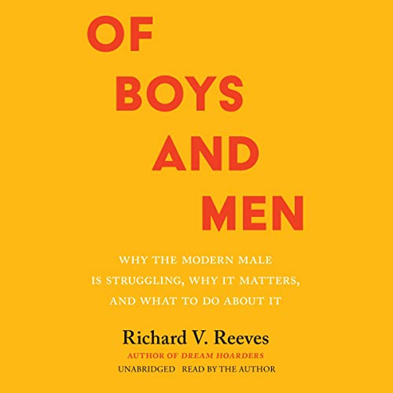
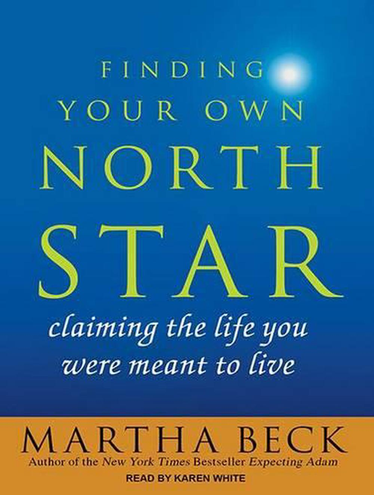

Recommended reading for summer 2024!
The Other Significant Others by Rhaina Cohen
A book suggesting that platonic friendship can be just as meaningful and central to our lives as romantic partnership.
“There is freedom in the unfamiliar, when the kind of relationship you have exists outside of well-worn categories.” ― Rhaina Cohen

This American Ex-Wife by Lyz Lenz
A funny and truthful memoir on the cultural institution of heterosexual marriage and how it’s not great for women.
“Do you want to know how I finally got my husband to do his fair share? Court-ordered fifty-fifty custody, that’s how.” - Lyz Lenz
Of Boys and Men by Richard V. Reeves
Moving past traditional gender roles can benefit everyone! Gender equality is not a zero-sum game. We should address problems that disproportionately affect women and problems that disproportionately affect men.
“We can hold two thoughts in our heads at once: that is, we can be both passionate about women’s rights and compassionate toward vulnerable boys and men.” - Richard V. Reeves

Braiding Sweetgrass by Robin Wall Kimmerer
As an Indigenous woman and a scientist, Robin Wall Kimmerer weaves together her cultural and scientific knowledge to tell stories about the human relationship with nature.
“Action on behalf of life transforms. Because the relationship between self and the world is reciprocal, it is not a question of first getting enlightened or saved and then acting. As we work to heal the earth, the earth heals us.” - Robin Wall Kimmerer
Finding Your Own North Star by Martha Beck
A guide on listening to your true self and building a life that feels right.
“Explorers depend on the North Star when there are no other landmarks in sight. The same relationship exists between you and your right life, the ultimate realization of your potential for happiness. I believe that a knowledge of that perfect life sits inside you just as the North Star sits in its unaltering spot.” — Martha Beck
